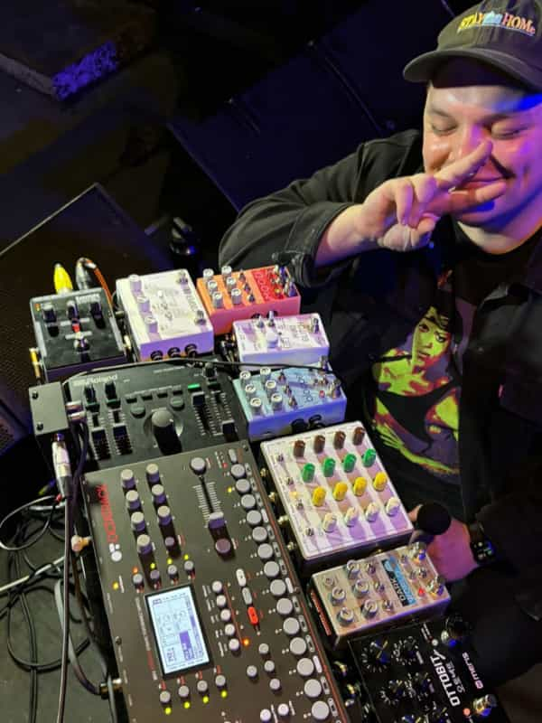

Ola! Long time, no blog — nice to be check in here again :) 2023 was an interesting year — I feel like my brain was very full, but with not many things. I changed job, spent a lot of time on the debut wolfjay album, and played some lovely shows. Though I always want to be doing more, I’m proud of what I did while balancing a lot of responsibilities and wanted to share a few of my favourites!
1. Played at Transgenre festival
I was super lucky this year to play a bunch of amazing queer events, from Gaytimes, Minus18’s Wear It Purple Day event , Bonez Queer Party, and support Brendan Maclean at his Melb show — but the highlight by far was heading to Sydney to play at the first Transgenre festival!
Organised by my friends Ellie and Tim, it was a super special show, and I felt very lucky to be a part of it.

“Wolfjay is glorious. Hyperpop doesn’t do it justice, this just plain soars, live autotuned vocals over truly magnificent beats and pads, it’s enough to put a roar in the quietest of throats. Absolutely brilliant.” — The Underground Stage
2. Worked on my debut album
It’s not ready yet, but I spent heaaaaaaaps of time this year on my debut album. As of today, the 23rd of December, I’ve made 134 iterations across the 10 songs on the albums tracklist, and awfully close to 1,000 hours all up. Yikes.

I don’t have a release date yet, but rest assured I want this record to be really great and am giving it the time it needs to be the best thing I could possible make.
3. Need, Want, Will.
I was able to take a few weeks off work in April and planted myself in the dining room of my house with a little recording setup and decided to work on some new music! And for extra fun (aka stress) I decided to throw a listening party/house show at the end of it 🙃
I got into a good swing of things each day, and the night of the 14th came around very quickly! About 30 friends packed into my little cottage home to hear the record, while my friend DJ aka @bright_garbage accompanied with some incredible live projection visuals.
I published my performance of 6 of my favourites on Youtube and Bandcamp as ‘Need, Want Will’, a Wolfjay live performance project. It’s the first little preview of songs that’ll be on the debut wolfjay album 💖

→ Buy Need, Want, Will on Bandcamp
4. Worked on my live sets
Around a year ago I decided to make the move from playing guitar and synth live to just focussing on live vocals + vocal manipulation. I kept working on that this year, and am really happy with how that setup has been going. It feels super fun embelishing my vocals with guitar pedals live. It’s a lot more fun than trying to balance an instrument as well, plus it’s so much easier to travel with for shows!

For the nerds, this is the setup:
Vocals:
- Eventide Mixing Link - a preamp and effects loop so I can run my vocals through pedals
- Cooper FX Signal Path Selector - adds true bypass switching to the Roland VT4 because it’s noisy, and also let’s me run another loop through my other guitar pedals at home
- Roland VT4 - handy little unit for auto tune and formant shifting without any notable latency. Best hands on controls that I’ve found so far, but build quality is dubious at best
- Pladask Matrisse Matrix Mixer - a 4 channel matrix mixer so I can feed my vocals into other pedals, and the output of those back into the other channels. Lots of fun and super easy to use live.
- Chase Bliss Mood mk1 - this is on the first channel of the Matrisse, I mostly use the delay on it, but also really love the slip pitch shift + loop side for some small moments live. It’s midi-clocked to the Octatrack.
- King of Gear Mini Clitch - a recent addition, lovely to add cruchy glitchy textures to live audio. Am running this into the Blooper at the moment, but thinking about moving it to pre-Matrisse so I can effect my pre-wet effects vocals with it
- Chase Bliss Blooper - mostly using it as a very customised delay with the modifiers. Don’t have any “live looping” moments in the set at the moment, but want to expand how I’m using the blooper in the future.
- Chase Bliss Dark World - have broken one of the knobs on this bb sadly, so it isn’t getting as much use lately, but this is one of my favourite mono reverbs. Can do everything from adding a little space to layering on heaps of character.
- Meris Ottobit Jr - Another 2023 addition, I really love the stutter effects on the Jr. and the bitcrushing is very tasty. Would love a bit more control over everything it can do, but for the price and size it’s hard to argue with. Normally run the Dark World through it 100% wet to add some lofi crunch to the reverb tails. This one’s also midiclocked from the Octatrack.
Everything else:
- Octatrack mk1 - I got the octatrack towards the end of 2022 and absolutely adore it! I run all of my tracks from the Octa, and have it setup for live beat repeating through the delay on FX2 of each track. Would love to add a midi controller so I can mute or filter individual tracks with one hand, but can’t justify the extra space it would take. Really keen to continue to grow how I’m using the Octa live, but even in my limited use for it I absolutely love it.
- Fender Engine Room lvl 8 power supply - Another new piece, the Engine Room has two USB outs, which I’m using to power the Octatrack and the VT4 so everything’s running off the one power supply. Very handy and hasn’t given me any grief.
- Disaster Area Midibox4 - Converts the midi out from the Octatrack to TRS midi for the Blooper and Ottobit Jr. so they can receive clock.
- Rockboard Quad 4.2 - have though a bunch about trying to downsize to a smaller board, but the 4.2 has been a great platform for this setup so far. Fits in a standard sized suitcase while in it’s soft carry case, so perfect for local and interstate shows. I really like the Rockboard stuff.
- Cables - I’m using rockboard flat right angle power cables, Rockboard flat TRS cables, and EBS flat TS cables for the whole board. Have all worked great so far, and they make it so easy to pack everything in tightly.
5. Was easy on myself
I think a lot about all the things I want to do with music, and the tole that music has taken on my health in the past. I want to be proliffic, but I also want to survive. I felt for a long time that I hadn’t earned the right to take a break with music. It was essential to always be releasing something, hyping people up, doing more, and seeming like you were building and growing and increasing. But most of the artists I love don’t do that. They’ll release something, promote it, perform it or tour it, then go back to a quiet place and slowly start making something new again.
I’m not sure where I got the impression that I had to be at every stage of the process at all times, but it’s definitely why I’ve rushed things in the past and not allowed myself to rest.
Realistically, I don’t have much interest in an endless cycle of single, promo, hype every few months. I would much rather aim to put out a great record every 3-4 years and just take my time with it.
I realise that the timing might not be great, and there might not be much of an audience to come back to once I get around to the first cycle of that process, but I’d rather start building towards a cadence that feels comfortable now than keep investing in something that doesn’t suit me knowing I’m just kicking the can down the road.
In conclusion — 2023 was quiet and fun 📫 and I’m excited to keep working on things in 2024! 💖 🏡 thank you for all your support, xoxo jackie / wolfjay
If you liked this you can tip me a few dollars :)
You can also listen to my music on streaming services,
or buy it on bandcamp, or check out more of my work.
Thank you for supporting the work of an independent, self-funded, non-binary artist 😌🧡✨